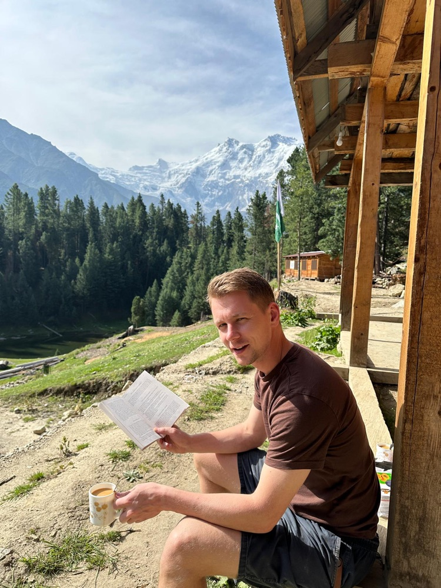
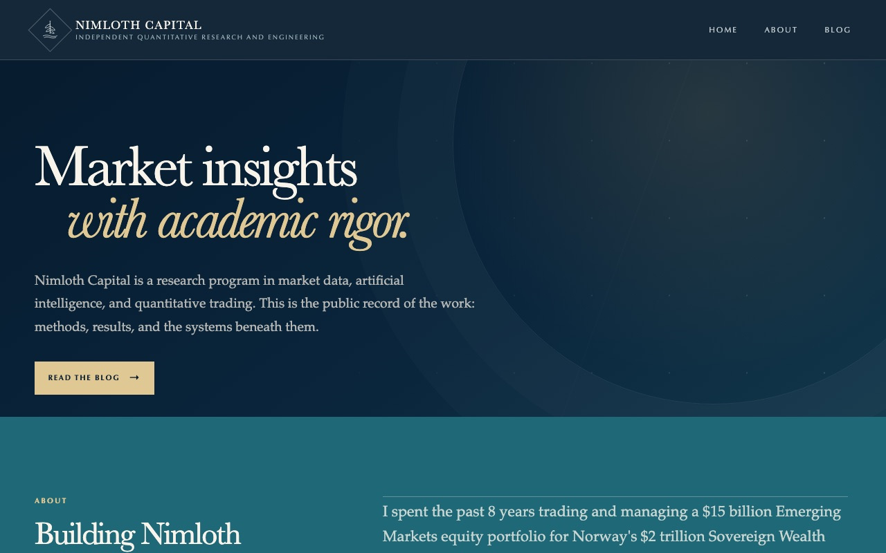
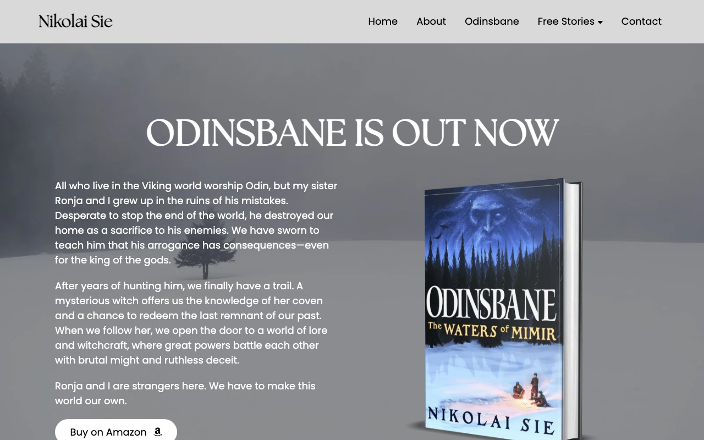

Investor · Builder · Author
Turning research into investment decisions.
I’m Nikolai Sie. I spent eight years at Norges Bank Investment Management, most recently running a $15 billion portfolio of Indian equities. Now I’m at Columbia, combining quantitative investing and machine learning through Nimloth Capital.

- 8 yrs
- Norges Bank Investment Management
- $15B
- Indian equity portfolio managed
- MBA + MS
- Columbia University, Engineering & Applied Science
- Asia-wide
- Algorithmic trading flow allocation
About
From the trading desk to the research lab.
Nikolai Sie is an investor, builder, and author from Norway, currently pursuing a dual MBA and MS in Engineering and Applied Science at Columbia University. His work brings together quantitative investing, machine learning, and the practical challenges of turning research into investment decisions.
Before Columbia, Nikolai spent eight years at Norges Bank Investment Management, based in Singapore. He worked across Asian equity trading and emerging markets portfolio management, most recently managing a $15 billion portfolio of Indian equities. Alongside his investment responsibilities, he developed trading analytics and ran algorithmic trading flow allocation across Asia. His experience spans hybrid fundamental and systematic investment strategies, tactical trading around market events, capital markets transactions, and risk management at scale.
This website showcases his ongoing work through projects from Columbia’s MBA/MS Engineering program, his writing, and Nimloth Capital, a two-year research program on AI investment strategies.
Nikolai is also the author of Odinsbane: The Waters of Mimir, a fantasy novel rooted in Norse mythology. Writing offers a connection to his Norwegian heritage and a different outlet for his curiosity—exploring the legacy of violence, ambition, and power through fiction.
Outside investing, engineering, and writing, his interests include fitness and mountaineering.
01 · Research
Nimloth Capital
Market insights with academic rigor.
A two-year research program in market data, artificial intelligence, and quantitative trading. The site is the public record of the work: methods, results, and the systems beneath them.
- AI-driven investment strategy research
- Open methods and published results
- Independent quantitative research and engineering

02 · Writing
Odinsbane
The Waters of Mimir
A fantasy novel rooted in Norse mythology. Two siblings who grew up in the ruins of Odin’s mistakes set out to teach the king of the gods that his arrogance has consequences, and find a world of lore and witchcraft where great powers battle with brutal might and ruthless deceit.
Self-published, and a different outlet for the same curiosity about power, ambition, and its legacy.
Visit odinsbane.com
03 · Coursework
Columbia Coursework
In the works…
Projects from the MBA/MS Engineering program at Columbia will be collected here.
Contact
Let’s talk.
For internships, research collaboration, investor conversations, or just to say hello.
nikolai.sie@gmail.com